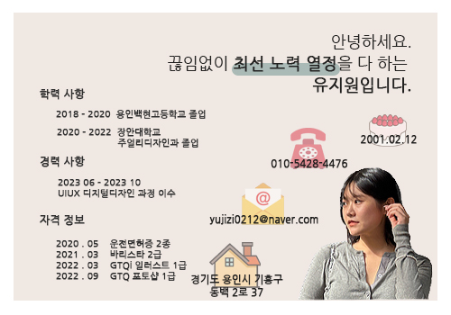

- Name : 유지원
- Birth : 2001. 02. 12
- Address : 경기도 용인시 기흥구
- Phone : 010-5428-4476
- Email : dbwldnjs3467@naver.com
로딩중 ...
Yu Ji Won
CREATIVE DESIGNER
물 같은 성격으로 어떤환경에서도 적응을 잘하며 물처럼 꾸준히 공부하고
계속 나아갈 자신이 있는 유지원입니다.
변화에 맞춰 흘러가는 다양한 디스플레이 환경에 최적화된 웹페이지를
구현하도록 노력하겠습니다.
스크롤바를 내리면 작품을 감상할 수 있습니다.
ABOUT ME
VISION
UIUX 과정을 통해 더더욱 도전하고 싶은 욕구가 커졌습니다.
새롭게 배운 지식들과 기술을 적용하는 과정들이 재밌었고 이러한
과정을들 통해
하나의 프로젝트를 만들어 내는 것에 큰 보람을 느꼈습니다.
또 팀원들과 하나의 프로젝트를 같이 함으로서 각자의 지식들을
나누며 부족한 부분들을 채워가는 과정이
큰 가치가 있다고 생각합니다.
퍼블리셔로써 어떤 업부를 맡더라도 팀원들에게 도움을 주고 서로
성장할 수 있도록 노력할 것입니다.
HTML과 CSS를 깔끔하게 다루면서 트렌드의 변화속도를 따라가는
퍼블리셔가 되는 것,
어떤 기기에서든 적합한 웹사이트 화면구성을 제공하여 사용자가
편리하게 컨텐츠를 이용할 수 있도록
제공하는 것이 저의 목표입니다.
항상 새로운 시도를 두려워하지 않는 웹퍼블리셔가 되겠습니다.
WHAT CAN I DO?
보여지는 것에만 집중하지 않고 속까지 꼼꼼하게 완벽한 웹사이트를
구현할 수 있도록 매일 노력하고 있습니다.
HTML5 & CSS3 시멘틱 페이지를
ZenCoding(EMMET), SCSS로 코딩할 수 있습니다.
다양한 사람들의 의견을 존중하고 소통할 수 있는 것이 저의 장점중 하나입니다.
JS 플러그인을 사용에 그치지 않고 필요한 기능을 직접 구현할 수
있는
Javascript/jQuery/React 로직구현이 가능합니다.
새로운 코딩기법을 배우고 응용하는 과정이 정말 즐겁습니다.
- 세심하고 온화한 태도를 가졌습니다.
- 가장 빠르고 효율적인 해결책을 내놓습니다.
- 변화에 대한 적응력이 높습니다.
- 다른 사람의 필요로 하는 생각을 빨리 파악합니다.
- 맡은 업무는 충실하게 끝까지 이행합니다.
- 자동차운전면허 2종
- GTQ 1급
- GTQ i 1급
자격정보
SKILL
탁월한 UX분석능력과 Emmet/Zencoding 활용
-
UX/UI 디자인
사용자의 Context와 Needs를 파악하고
Problem을 해결할 수 있는 Insight 도출 -
반응형 웹표준
시멘틱을 지향하는 HTML/CSS 작성능력 보유,
자바스크립트와 제이쿼리 기반의 로직 구현 가능
SASS 전처리기와 리액트 라이브러리 활용
-
Sass Preprocessor
협업 웹코딩의 필수 기술인 SCSS를 이용한
CSS 스타일링을 원활이 사용할 수 있습니다. -
리액트 라이브러리
국내 프론트엔드 시장의 대세 리액트 코드구현,
자바스크립트와 제이쿼리 기반의 로직구현 가능
ABILITY
젠코딩
HTML5
CSS
JQuery
Illustrator
Photoshop
온라인 이력서
보여지는 것에만 집중하지 않고 속까지 꼼꼼하게 완벽한 웹사이트를
구현할 수 있도록
매일 노력하고 있습니다.
HTML5 & CSS3 시멘틱 페이지를 ZenCoding(EMMET)으로 작성할 수
있습니다.
다양한 사람들의 의견을 존중하고 소통할 수 있는 것이 저의
장점중 하나입니다.
JS 플러그인을 사용에 그치지 않고 필요한 기능을 직접 구현할 수
있는
Javascript/jQuery/React 로직구현이 가능합니다.
새로운 코딩기법을 배우고 응용하는 과정이 정말 즐겁습니다.
{kind=link}

UXDESIGN
작품리스트
이전 다음내가 생각하는 사용자경험 - User Experience
UX 디자인의 궁극적인 목표는 전략적인 디자인을 통해 제품을 개발 및
향상하여 첫 단계부터 마지막 단계까지 타겟 고객이 최고의 경험을 할
수 있는 환경을 제공하는 것이다.
내가 생각하는 UX란, '디자인'보다는 '기획'에 가깝다고 생각한다.
웹/모바일 사이트 내에서 사용자의 행동 흐름을 분석하고, 어떻게 해야
행동을 유도할 수 있을지에 관하여 그 흐름을 설계하는 역할을
해야하기 때문이다.
사용자가 원하는 기능을 사용할 때 불편함을 느끼게 하지 않게 하려면
모든 요소가 원활하게 함께 작용할 수 있도록 해야하는데 사용자의 가치,
능력, 니즈 및 욕구에 대한 깊은 이해를 통해서만 실현이 가능하다고
생각한다.
Design과 UX의 차이
- 1. 트럭 방수포
-
트럭 방수포를 가방으로 업사이클링(Upcycling)한
가방 브랜드 프라이탁(FRAEITAG)
- 2. 마스크
-
버려진 마스크를 의자로 업사이클링(Upcycling)한
김하늘 디자이너

PORTFOLIO
CONTACT
귀사에 입사를 지원합니다.
저의 웹퍼블리싱 이야기 입니다.
질문을 선택하시면 정리된 답변을 보실 수 있습니다.
- 1. HTML5의 가장 큰 특징은 무엇일까요?
-
카메라, 동작센서 등의 H/W 기능을 웹에서 직접적으로 제어합니다.
다양한 2차원 및 3차원 그레픽 기능을 지원합니다.
실시간으로 서버와 양방향 통신을 수행할 수 있습니다.
비디오 및 오디오 기능을 자체적으로 지원합니다.
네트워크 미지원 환경에서도 웹 이용을 가능하게 합니다. - 2. 웹표준, 웹접근성, 시멘틱웹에 대하여 설명하세요.
-
웹표준이란? - 웹에서 사용되는 기술들의 표준화를 의미합니다. 웹사이트에 접속한 사용자는 어떠한 운영체제나 브라우저를 사용하더라도 웹페이지가 동일하게 보이고 정상적으로 작동해야 함을 의미합니다.
웹접근성이란? - 장애인, 고령자 등이 웹사이트에서 제공하는 정보에 비장애인과 동등하게 접근하고 이해할 수 있도록 보장하는 것입니다.
시멘틱웹이란? - 기계가 사람을 대신헤서 웹 페이지의 정보를 이해하고, 우리에게 필요한 정보만 보여주거나 정보를 가공해서 우리가 필요로 하는 형태로 가공해주는 것을 의미합니다. - 3. 자바스크립트 라이브러리 사용시 가장 큰 장점은?
-
코드를 재 사용할 수 있고 유지 보수가 편리헤지며 소스를 제공하지 않기 때문에 중요한 기술에 대한 유출을 방지할 수 있습니다. 그리고 개발 기간이 단축되고 코드 품질도 향상 시킬 수 있습니다.
- 4. setInterval()은 어디서 사용할 수 있을까요?
-
어떤 코드를 일정한 시간 간격을 두고 반복해서 실행하고 싶을 때 사용합니다.
- 5. CSS 미디어쿼리는 어떤 역할을 수행하는지 답하세요.
-
특정 화면 사이즈마다 다른 스타일을 적용할 수 있습니다.
포트폴리오를 끝까지 봐주셔서 감사합니다.
본 페이지는 저의 개인 포트폴리오용으로 제작되었으며, 상업적인 목적과
관련이 없음을 알려드립니다.